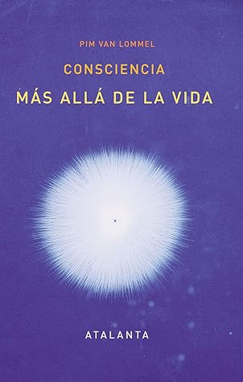

Consciencia más allá de la vida
Reseña por Jorge I. Zuluaga

Ver reseña en GoodReads (necesita cuenta)
Al mismo tiempo es un libro lleno de pseudociencia, pensamiento mágico y mala, muy mala aplicación de las ideas de la física - clásica y contemporánea -, reunidos todos para crear un relato inverosímil, construído sobre una insufrible verborrea científica - cargada de expresiones como "resonancia", "localidad", "complementariedad", "fotones" ,"cuántica", "coherencia", una construcción intelectual casi infantil - como lo son la mayoría de los relatos pseudocientíficos - sobre el funcionamiento de la conciencia y la relación entre ella y los procesos biológicos que ocurren en el cuerpo de los animales, especialmente de los humanos.
Si han tenido alguna relación con la muerte de un familiar cercano, incluso si han tenido una experiencia cercana con su propia muerte, tal vez encuentren algun consuelo o ayuda para sobrellevar estas experiencias en algunos apartes o en todo el libro. Si saben realmente de física, biología y medicina necesitaran un esfuerzo muy grande para avanzar por algunos de los capítulos centrales del libro. Si es que no lo abandonan en los primeros capítulos, desde los cuales se empieza a adivinar el contenido posterior del libro.
Mi esposa y yo nos topamos con este texto en una librería justo después de perder a uno de nuestros hijos, una de las peores experiencias relacionadas con la muerte que puede vivir un ser humano, con excepción posiblemente de la muerte propia. Estábamos tocados por el tema de la muerte y naturalmente buscábamos respuestas a algunas preguntas que seguramente afectan a muchas personas en situaciones similares: ¿término real y totalmente la vida de nuestro hijo la noche en la que murió? ¿toda su experiencia, sus habilidades, sus conocimientos se esfumaron para siempre? ¿es así de inútil la existencia humana? ¿tendremos alguna vez la posibilidad de encontrarnos nuevamente con él, de abrazarlo, de pedirle perdón por lo que hicimos mal - y aquí hablo especialmente por mi?.
Por nuestra relación con la ciencia, mi esposa es artista pero lleva muchos años leyendo divulgación científica e interactuando con profesionales de la ciencia y aficionadas en grupos de interés y yo soy físico, docente e investigador activo en el área de la astronomía, nuestro escepticismo frente a cualquier relato relacionado con la vida más allá de la muerte es suficientemente grande para alejarnos de textos pseudocientíficos en el tema. Sin embargo, notamos que el libro era escrito por un médico, que no hacía mención explícita a temas mágicos o supersticiosos - dioses y cielos, y que tenía 6 ediciones a cuestas. Esto último, sin embargo, nos produjo en realidad alguna desconfianza, porque, como decimos en Colombia, "de eso tan bueno, no dan tanto". Tener 6 ediciones podría significar o que era un texto muy bueno o que la mayoría de la gente, que tiene creencias sobrenaturales y supersticiosas, lo había encontrado agradable de leer porque confirmaba sus propias creencias.
En un primer momento nos resistimos a comprar y leer el libro. Al pasar el tiempo decidimos, sin embargo, darle una oportunidad a una lectura que tal vez podría ayudarnos con el duelo. Lo conseguimos finalmente y mi esposa lo leyó primero.
Después de su lectura, y con las debidas advertencias suyas - naturalmente ella sabe que por mi personalidad y por ser un científico mi resistencia a las ideas "alternativas" es mucho mayor, me propuse a leerlo completo también. Me despoje - o eso creí - de mis prejuicios y decidí abrirme a otras formas de pensar y de interpretar las experiencias humanas. Lo leí de pasta a pasta y en ello me favoreció el vicio que tengo de no abandonar los libros que comienzo.
Como sucede con todo lo que leemos juntos, el peso del libro termino casi duplicándose por la cantidad de banderitas autoadhesivas que le pegamos para resaltar las ideas más meritorias; pero también - al menos en mi caso - para señalar aquellas ideas o razonamientos defectuosos que cualquiera con una formación científica habría señalado y utilizado como argumento para invalidar un argumento.
El libro esta realmente bien estructurado y escrito. Es entretenido y tienes muchas ideas novedosas.
Sin embargo, como ya lo he dejado adivinar antes, mis sentimientos al finalizar la lectura fueron sencillamente contradictorios.
Siento que he perdido horas valiosas para leer libros realmente interesantes o entretenidos, incluso sobre el mismo tema, exponiéndome a las teorías descabelladas de un supuesto científico que leyó todo lo que pudo sobre la teoría cuántica (especialmente libros divulgativos) y construyó con un montón de retazos y citas un horroroso monstruo de Frankestein intelectual para ajustar sus experiencias y creencias sobre la consciencia. Al mismo tiempo, sin embargo, he conocido y aprendido a través de la lectura del libro cosas muy interesantes sobre la investigación médica alrededor de lo que sucede cerca a la muerte, algunas investigaciones realizadas por el propio autor y sus colaboradores. También me he acercado un poco al problema de la conciencia y su relación con el cerebro y el cuerpo de los animales. De alguna manera se ha relajado con esta lectura mi excesivo materialismo y me he abierto a conocer y leer un poco más, espero que de la mano de autores y autoras mucho más versados, sobre la posibilidad de que fenómenos complejos ocurran alrededor del cerebro, sin reducirse exclusivamente a la actividad electromagnética de las neuronas. También creo que el libro me ha servido para incrementar mi empatía hacia las personas que viven experiencias cercanas a la muerte y que las describen como experiencias intensas y de conciencia lúcida. Esta empatía es muy importante, como termine aprendiendo a partir de la lectura del propio libro, para que muchas de esas experiencias se compartan y efectivamente puedan usarse como evidencia para hacer investigación científica sobre el tema. Incluso he llegado a entender que conocer esas experiencias me podría preparar para el caso de que yo mismo o alguien muy cercano a mí se enfrentará a una experiencia similar.
No hace falta tener creencias sobrenaturales y supersticiosas sobre el "alma" y la vida más allá de la muerte, o suscribir teorías pseudocientíficas sobre la naturaleza material o inmaterial de la consciencia, para entender que la muerte y todo lo que pasa con nuestra experiencia subjetiva en ese trance, es realmente interesante y debería ser objeto de intensa investigación científica. Tampoco hace falta relajar el sano escepticismo o los mecanismos intelectuales que tantos éxitos han cosechado en la ciencia, para admitir que debemos ampliar el dominio de lo que consideramos "evidencia científica" y abarcar con ello experiencias subjetivas, experiencias que son, posiblemente, nuestra única ventana a los fenómenos que ocurren cerca o alrededor de la muerte.
Pero de allí a creer que una teoría basada torpemente en la teoría cuántica y que sostiene la existencia de una consciencia infinita y no local (los términos repetidos por el autor en las partes más insoportables del libro), que resuena con el ADN "basura" y que nos conecta con una dimensión en la que no existe el espacio y el tiempo - todas son ideas del autor, hay mucho trecho.
Todos deberíamos reconocer que existen fenómenos en el mundo que carecen todavía de explicaciones consistentes y convincentes basadas en el mejor conocimiento que hemos acumulado sobre el universo (principalmente conocimiento científico). También deberíamos reconocer que sin un poco de apertura a explicaciones alternativas, sin la admisión de que hay que probar caminos que se alejen momentánea e incluso permanentemente de las formas de pensar de la ciencia, es posible que no logremos profundizar en el conocimiento de los más grandes misterios del universo. El problema de la pseudociencia, sin embargo, es que pretende presentar alternativas, incluso soluciones "definitivas" a los problemas (ese es uno de los aspectos que más me molesto de las teorías de Van Lommel, sus pretensiones de universalidad), juntando palabras y conceptos sofisticados, la mayoría de las veces provenientes justamente de la misma ciencia que critican.
Los esfuerzos pseudocientíficos, como el que hace Pim Van Lommel en "Consciencia más allá de la vida", para resolver problemas tan interesantes como la continuidad de la consciencia más allá de los límites de lo que llamamos "vida", se me antojan como si frente al problema de la construcción de un edificio firme y resistente y contando con un conjunto de materiales de construcción, agua, arena piedras, metales, un grupo de niñas y niños sin experiencia, empezaran a apilar los materiales sin mucho orden, ni reflexión: unas piedras aquí, un poco de arena allá, un cumulo de varillas acullá. El resultado del proceso será normalmente una pila de escombros (teorías pseudocientíficas) que si bien puede servir temporalmente para resguardarse de los elementos (encontrar relatos razonables para explicar algunos misterios), a largo plazo no soportan las pruebas más duras del tiempo atmosférico (críticas, evidencia de fallos lógicos, falacias argumentativas, uso torpe del conocimiento científico) o un pequeño sismo (nuevas evidencias contradictorias).
Lo que hace la ciencia, o el pensamiento científico como deberíamos llamarlo realmente, y siguiendo con la analogía, es hacer que los mismos niños y niñas, más maduras, más conscientes de la importancia de obtener un resultado confiable a largo plazo, realicen un proceso cuidadoso de selección de los materiales (ideas, hipótesis y modelos), lleven a cabo pruebas de la unión de esos mismos materiales, incluso pruebas a veces no necesariamente conducentes al fin último (muchos trabajos científicos orientados a resolver el problema de la conciencia podrían no tratar necesariamente sobre la conciencia misma, pero sí sobre la naturaleza física y el funcionamiento de los tejidos que la producen o en los que se manifiesta - para darle mérito a algunas de las propuestas del Van Lommel); esos ingenieros e ingenieras de ideas, deberán realizar pruebas de resistencia lentas y pacientes, llevar a cabo un trabajo colectivo (someter sus ideas al escrutinio de otras personas para ver si están bien construidas y en la medida de las posibilidades libres de vicios y sesgos); si se hace bien, al final, si bien no se obtiene una edificación perfecta (una teoría científica) - ningún profesional cree que la ciencia presente es perfecta, al menos podemos construir lo mejor con los mismos materiales.
No es cuestión de dogmas o de impedir que nuevas ideas vean la luz. Aunque es obvio que como humanos, también los profesionales de la ciencia tengamos prejuicios y resistencias psicológicas. Se trata es de hacer un trabajo lento y metódico para que lo que resulte soporte el embate de los elementos y no se desmorone. Yo también quiero saber qué es la consciencia. Yo también quiero saber que paso con la mente de mi hijo al morir. Pero sobre todo quiero que el relato que me cuenten sobre lo que paso sea lo más cercano posible a una realidad en la que creo (sea esta objetiva o intersubjetiva).
Para mí, como científico, es realmente lamentable que un profesional de la medicina, una persona formada intelectualmente para construir ideas sobre la base de evidencias y de intuición - nadie que se dedica a la ciencia niega la importancia de la intuición - para elaborar argumentos sobre la base de un cuerpo referencias articuladas a la literatura especializada, o de usar un sano escepticismo - especialmente dirigido a sus propios sistemas de creencias -, una persona así pueda ser capaz de crear, seguramente con la anuencia bobalicona de una multitud de creyentes que carecen de esa misma formación intelectual, una historia tan mal fundamentada como la que presenta el doctor Van Lommel en los capítulos más especulativos de este libro.
Lamento mucho también que los mejores aspectos de su trabajo de investigación sobre las experiencias cercanas a la muerte (ECM), un trabajo realmente interesante y que merece más atención de otros científicos - como argumenta su autor ampliamente - queden opacados por sus propias especulaciones pseudocientíficas.
Si se eliminaran los aspectos más especulativos de este libro, y no, no me refiero a eliminar completamente sus propias conjeturas sobre una naturaleza mucho más compleja de la conciencia o sus dudas sobre el muy exacerbado monismo materialista que caracteriza a la ciencia, el libro tal vez se reduciría a un 40% de su extensión total. Aún así, es mi opinión - todo en esta reseña lo es realmente - que este libro se haría más atractivo para un publico escéptico mucho más amplio. Lo sería especialmente para aquellos que tenemos también una formación científica y que, en esto estoy completamente de acuerdo con el autor, deberíamos conocer mejor las experiencias que viven algunas personas cerca a la muerte. Científicos o no, todos nos vamos a morir. duh!. No saber sobre nada sobre esas experiencias es realmente una falla.
¿Nos ayudo el libro a sobrellevar el duelo la muerte de nuestro hijo?. En esto solo puedo hablar por mí: sí, si me ayudo.
Pero tal vez no en el sentido en el que lo podría predecir el propio autor.
No, todavía no creo en la existencia de una consciencia infinita no local o en la reencarnación de mi hijo en otro cuerpo. Sin embargo, conocer las experiencias cercanas a la muerte de algunos de los pacientes descritos por el doctor Van Lommel me ha ayudado a entender que la muerte tal vez este acompañada de experiencias subjetivas menos traumáticas de lo que creemos (una parte importante del sufrimiento por la muerte de un ser querido viene de la creencia de lo que se puede sufrir en ese momento). Tal vez, solo tal vez, mi hijo y su consciencia vivió por unos segundos o unos minutos experiencias subjetivas de paz, incluso experiencias de reconciliación con todas las personas con las que convivió. Tal vez, en esos minutos me perdonó por lo que hice y deje de hacer.
Para lo demás, para lo que ocurrió o no ocurrió después, seguiré esperando una explicación mejor. Tal vez tenga que esperar al momento de mi propia muerte (o antes) para encontrarla. O tal vez no.